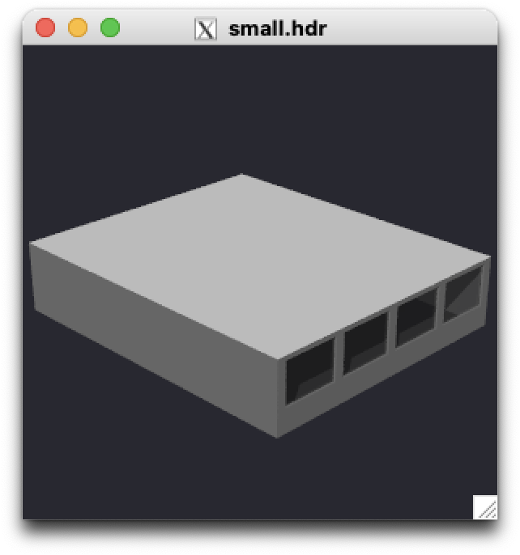

How to set up a simple rtrace workflow.
Here we go through the process of setting up a simple Radiance model and the workflow of computing irradiance values.
Prepare a model
If you already have a Radiance model setup, you can skip this step and follow along using your own.
If you don't have a model already we can use genradroom to get ourself
a simple Radiance model.
Let's generate a open-office sized side-lit room
with four same-sized windows. The room will be 12 meters wide, 14 meters
deep with a ceiling height of 3 meters. Each window is 2.5 meters in width
and 1.8 meters in height and has a sill height of 1 meter. Windows are 0.4 meters
apart from each other. Finally, we want our facade to have a thickness
of 0.1 meters. We'll call this model 'aroom'. The genradroom command is:
$ gen room 12 14 3 \
-w 0.4 1 2.5 1.8 \
-w 3.3 1 2.5 1.8 \
-w 6.2 1 2.5 1.8 \
-w 9.1 1 2.5 1.8 \
-t 0.1 -n aroom
Afterwards, we will have a Objects folder in our current working
directory with all of our Radiance model inside.
|____Objects
| |____window_3_aroom.rad
| |____wall_aroom.rad
| |____window_2_aroom.rad
| |____ceiling_aroom.rad
| |____window_1_aroom.rad
| |____materials_aroom.mat
| |____window_0_aroom.rad
| |____floor_aroom.rad
objview and
make sure it's what we'd expect in terms of layout and geometry.
And we can see that it is what we'd expect.

Generate an octree file
Now that we have model, we can start to run some actual simulation. Each code block below can be copy and paste into a something like a Jupyter Lab for an interactive workflow.
First lets import all the necessary modules.
from frads import matrix
from frads import parsers
from frads import sky
from frads import utils
from frads.types import WeaData
from frads.types import WeaMetaData
Next lets gather our model files. Notice that we have our material files first in the list.
fpaths = ["Objects/materials_aroom.mat",
"Objects/ceiling_aroom.rad",
"Objects/wall_aroom.rad",
"Objects/floor_aroom.rad",
"Objects/window_0_aroom.rad",
"Objects/window_1_aroom.rad",
"Objects/window_2_aroom.rad",
"Objects/window_3_aroom.rad",
]
Now that we know where all the paths are, we can call oconv
to get ourself a octree for ray tracing. We'd like to save
our octree as a aroom.oct file.
Notices that we have a aroom.oct, which only contains the geometry.
We need to define our light source, usually some kind of sky model,
for rays to trace to. In this example, we will use Perez all-weather
sky model. There are also standard CIE skies as alternatives.
To do so, we can use gen_perez_sky function to get our sky
description and generate a new octree with it.
First to get our sky description, we make up a clear sky on 12-21 12:00
with direct normal irradiance of 800 W/m2 and diffuse horizontal irradiance of 100 W/m2.
We also need to define our location in terms of latitude, longitude, time-zone, and
elevation. We can then put all these information into the WeaData and WeaMetaData object.
month = 12
day = 21
hours = 12
dni = 800
dhi = 100
latitude = 37
longitude = 122
time_zone = 120
elevation = 0
wea_data = WeaData(month, day, hour, minutes, hours, dni, dhi)
wea_meta = WeaMetaData(latitude, longitude, time_zone, elevation)
sky_descr = sky.gen_perez_sky(wea_data, wea_meta)
aroom.oct octree
to make a new octree file. Let's call the octree with our sky specific information,
'aroom_37_122_1221_1200.oct'.
room_sky_octree = f'aroom_{latitude}_{longitude}_{month:02d}{day:02d}_{hour:02d}{minute:02d}.oct'
matrix.oconv(room_sky_octree, input=sky_descr, octree=room_octree)
Get rays
We need send rays to the octree file we just created. In Radiance, rays are made of two vectors, one for the starting position and one for the direction the ray is heading. Essentially, we need six values to define our two vectors in cartesian corrdiantes. A ray positioned at x=0, y=0, z=0, pointing upwards is thus:
For this example, we're gonna simulate workplane illuminance. These are essentially virtual sensor positioned at table height pointing upwards, measuring how much light arrives at your table. To get a grid of such sensors, we can usegen_grid utility
function, which need a polygon, spacing, and height as
arguments. Spacing and height define the grid spacing and the distance
from the polygon from which the grid is based-one.
Since we are generating a grid of workplane sensors,
we can use our floor as the polygon. To get our floor polygon,
we can simply load in our floor_aroom.rad file and parse
the polygon using the parse_polygon function from the parsers module.
The code block demonstrates how we generate a grid of sensors with
1 meter spacing and 0.75 meters away from the floor:
floor_primitives = utils.unpack_primitive("Objects/floor_aroom.rad")
# Since we only have one primitive in this file,
# we'll take the first one to parse.
floor_polygon = parsers.parse_polygon(floor_primitives[0].real_arg)
grid = utils.gen_grid(floor_polygon, 1, 0.75)
Let's trace
Finally, after all these preparation, we are ready to trace some rays. Let's first trace a single ray, and use the one of the grid sensors we had just created.
aray = " ".join(map(str, grid[0]))
option = "-I+ -ab 1 -ad 64 -aa 0 -lw 0.01"
result = matrix.rtrace(aray, option, room_sky_octree)
result, we will see the following:
Below the header, we can see three values, corresponding to red, green, and blue
channel from our simulation. We can weight these RGB to derive our illuminance
values.
First we need get rid of the header. We can do that by passing header=False
when we call rtrace. Or like so:
illuminance, we have:
Next, let's trace all of our grid sensors. Since our grid of sensors are a list of lists of floats, we need to process them a little bit before rtrace can take them.
rays = "\n".join([" ".join(map(str, row)) for row in grid])
results = matrix.rtrace(rays, option, room_sky_octree, header=False)